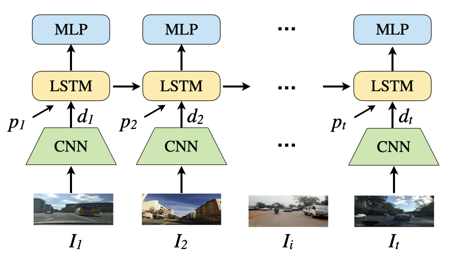

NeurIPS 2020 Workshop on Machine Learning for Autonomous Driving (ML4AD)

Abstract
Sequence-based place recognition methods for all-weather navigation
are well-known for producing state-of-the-art results under challenging
day-night or summer-winter transitions. These systems, however, rely on
complex handcrafted heuristics for sequential matching - which are applied
on top of a pre-computed pairwise similarity matrix between reference and
query image sequences of a single route - to further reduce false-positive
rates compared to single-frame retrieval methods. As a result, performing
multi-frame place recognition can be extremely slow for deployment on autonomous
vehicles or evaluation on large datasets, and fail when using relatively short
parameter values such as a sequence length of 2 frames. In this paper, we propose
DeepSeqSLAM: a trainable CNN+RNN architecture for jointly learning visual
and positional representations from a single monocular image sequence of a route.
We demonstrate our approach on two large benchmark datasets, Nordland and Oxford
RobotCar - recorded over 728 km and 10 km routes, respectively, each during 1 year
with multiple seasons, weather, and lighting conditions. On Nordland, we compare our
method to two state-of-the-art sequence-based methods across the entire route under
summer-winter changes using a sequence length of 2 and show that our approach can get
over 72% AUC compared to 27% AUC for Delta Descriptors and 2% AUC for SeqSLAM;
while drastically reducing the deployment time from around 1 hour to 1 minute against both.
(Oct 30, 2020) Paper DeepSeqSLAM accepted at the NeurIPS 2020 Workshop on ML4AD.
YouTube Video:
SlidesLive @NeurIPS 2020:
Bibtex
@article{chancan2020deepseqslam,
author = {M. {Chanc\'an} and M. {Milford}},
title = {DeepSeqSLAM: A Trainable CNN+RNN for Joint Global Description and Sequence-based Place Recognition},
journal = {arXiv preprint arXiv:2011.08518},
year = {2020}
}